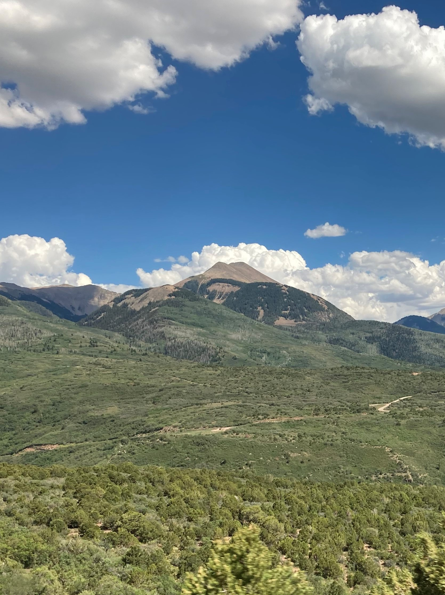
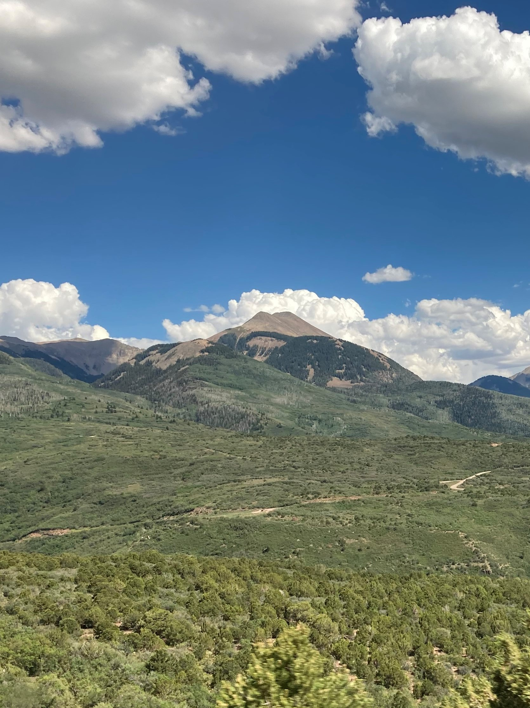

Utah
In July of 2020, I drove 16 hours west to Moab, Utah, where I spent a week going on adventure after adventure. Utah is indescribably beautiful. There are countless sites to see and places to visit. While there we stayed in an Air B&B condominium where we swam, grilled, and just relaxed after our long days. During the days we went several places. Our first visit was Arches National Park. There we hiked and climbed many rocks. We watched the sunrise on the rocks, which is one of the most beautiful things I've seen to this day. We also made visits to Canyonlands National Park and the Colorado River. On the river we went white water rafting, and we drove the second most scenic highway in the United States, according to National Geographic. We barely even scratched the surface of the beauties of Utah. The state is on my list of places to visit again!
More information on Moab